フーコーの振り子のモデル化
このデモでは、フーコーの振り子のモデル化方法を示します。 フーコーの振り子は、フランスの物理学者レオン・フーコーが考えたものです。 その目的は、地球の自転を証明することでした。 地球は自転しているため、フーコーの振り子の振動面は終日回転します。 振動面が 1 周するのにかかる時間間隔 T は、地理緯度によって異なります。
フーコーの振り子のうち最も有名なのは、パリのパンテオンに取り付けられたものです。 28 kg の金属球が 67 m ものワイヤーでつるされました。 そこで、このデモではパリの地理緯度で 67 m の振り子をシミュレートします。
目次
Simulink® モデル
フーコーの振り子の問題を Simulink® で解く最も簡単な方法は、このシステムの連立微分方程式を解くモデルを作成することです。 このモデルを図 1 に示します。フーコーの振り子を説明する方程式は以下のとおりです。 このモデルの物理現象とこれらの方程式の導出の詳細は、解析と物理学を参照してください。
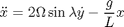

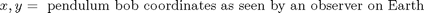
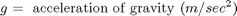
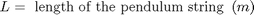
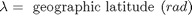
モデルを開く
MATLAB® コマンド ウィンドウで sldemo_foucault と入力して このモデルを開きます。関連データが MATLAB ワークスペースに sldemo_foucault_output という構造体でログが作成されます。ログが作成された信号には青いインジケーターが付きます。信号のログの詳細は、Simulink Help を参照してください。
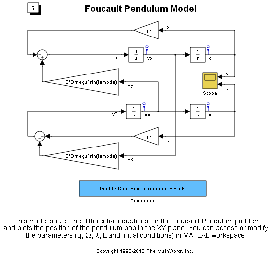図 1: フーコーの振り子モデル
初期条件
定数と初期条件が sldemo_foucault_data.m ファイルから読み込まれます。このファイルの内容は、以下の表 1 のとおりです。シミュレーション パラメーターを MATLAB ワークスペースで直接変更できます。振り子の初期振幅は、振り子の長さよりも小さくなければなりません。微分方程式は小さな振動に対してのみ有効であるためです。
表 1: 初期条件
g = 9.83; % 重力の加速度 (m/秒^2) L = 67; % 振り子の長さ (m) initial_x = L/100; % 最初の x 座標 (m) initial_y = 0; % 最初の y 座標 (m) initial_xdot = 0; % x 軸方向の最初の速度 (m/秒) initial_ydot = 0; % y 軸方向の最初の速度 (m/秒) Omega=2*pi/86400; % 地球の自転速度 (rad/秒) lambda=49/180*pi; % 緯度 (rad)
シミュレーションの実行
モデル ウィンドウのツール バーの [再生] ボタンをクリックしてシミュレーションを実行します。 このシミュレーションでは、可変ステップ スティッフ ソルバー ode23t が使用されます。 フーコーの振り子が 3600 秒にわたってシミュレートされます (シミュレーション時間は変更可能)。 既定の相対許容誤差 RelTol = 1e-6 が使用されます。
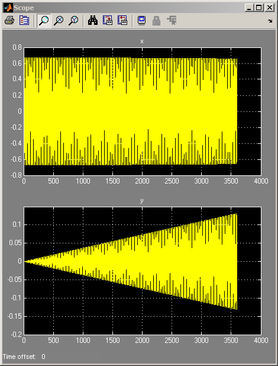図 2: フーコーの振り子のシミュレーション結果 (シミュレーション時間は 3600 秒)
結果
シミュレーション結果は、上記の図 2 のようになります。 振り子の x 座標および y 座標と、x 軸方向および y 軸方向の速度成分が計算されます。
振り子の振動面が 360°回るには 24 時間以上かかります。 振動面が 1 周するのにかかる時間は、地理緯度 lambda の関数です (解析と物理学での導出を参照)。
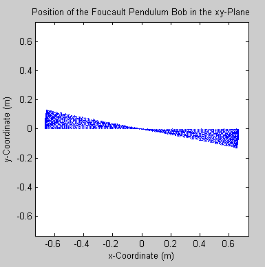
図 3: 振り子の振動面が 1 時間でどれだけ回るかを示す Animation ブロック
シミュレーションを実行した後、Animation ブロックをダブルクリックして 結果をアニメーションで表示します。
- メモ: デモの "結果をアニメーションで表示" 部分では、Signal Processing Toolbox™ が必要です。 これがインストールされていない場合、Animation ブロックをダブルクリックすると、エラーが表示されます。 デモのその他の部分は、Signal Processing Toolbox がなくても正しく機能します。
sldemo_foucault_animate.m ファイルでは、振り子の振り玉の位置がさまざまな時点でプロットされています。 振り子の振動面が回転する様子がはっきりと見てとれます。
- メモ: 相対許容誤差を既定値よりも大きくしてシミュレーションを実行している場合、結果は長時間にわたって数値的に不安定になります。 必ず、スティッフな可変ステップ ソルバーを使用してください。 スティッフな問題の数値的不安定性とソルバーの性能の詳細は、「スティッフなモデルを使った可変ステップ ソルバーの調査」デモを参照してください。
モデルを閉じる
モデルを閉じます。 生成されたデータを消去します。
解析と物理学
この節では、フーコーの振り子を解析し、その背景にある物理現象を説明します。 振り子は、長さ L のワイヤーにつるされた質点としてモデル化できます。 振り子の地理緯度は lambda です。 図 4 の基準座標系を使用すると便利です。 慣性座標系 I (地球の中心に対する) と非慣性座標系 N (地表上の観測者に対する) 回転により、非慣性座標系は加速します。
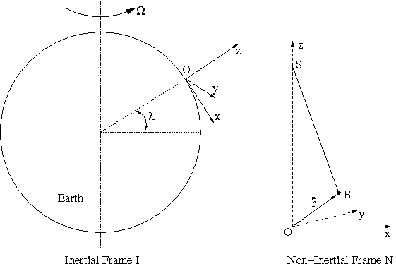
図 4: この問題の慣性座標系と非慣性座標系
点 O は非慣性座標系 N の原点です。これは、振り子のつり下げ点の真下にある地表上の点です。 非慣性座標系は、z 軸が地球の中心とは逆の、地表に垂直な方向に向くように選択されます。 x 軸は南に向かい、y 軸は西に向かいます。
最初に説明したとおり、フーコーの振り子の振動面は回転します。 振動面は、以下の式で与えられる時間 Trot で 1 周します。Tday は 1 日 (つまり、地球が 1 回自転するのにかかる時間) です。
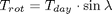
正弦係数についてはさらに説明が必要です。 振り子の振動面は地球の中心に対する慣性座標系で固定されていると仮定されることが多いのですが、これは誤りです。 それが正しいのは北極と南極のみです。 このような混乱を除外するために、振り子がつり下げられている点 S (図 4 を参照) について考えてみましょう。 慣性座標系 I の場合、点 S は円を描きます。 振り子の振り玉は、一定の長さのワイヤーでつるされています。 議論を簡単にするために、空気摩擦は無視します。 慣性座標系 I の場合、振り玉にかかる力は、ワイヤーの張力 T と重力 Fg の 2 つのみです。
ベクトル r は、振り子の振り玉の位置 B (図 4 を参照) を示します。 ニュートンの第 2 法則によれば、物体にかかるすべての力の合計は、その物体の質量に加速度を乗算したものと等しくなります。
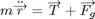
この証明では、ドットは時間微係数を表し、矢印はベクトルを表し、キャップはユニタリー ベクトル (x、y、z 軸方向に i、j、k) を表します。 ベクトル矢印の上のドットは、そのベクトルの時間微係数を示します。 ドットの上の矢印は、時間微係数のベクトルを示します。 合計加速度と動径加速度の違いを以下で確認してください。
合計加速度:
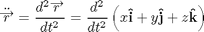
動径加速度:
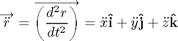
重力加速度は地球の中心に向かいます (z 軸の負の方向)。
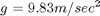
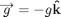
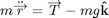
加速度の項を以下のように分解します。
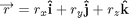
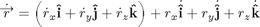
非慣性基準座標系 N が空中を回っているため、単位ベクトルの時間微係数が表示されます。つまり、ユニタリー ベクトル i、j、k は空中を回っています。時間微係数は以下のように与えられます。Omega は地球の自転の角速度です。スカラー Omega は角速度の値です。ベクトル Omega はベクトル角速度です。その方向は右手の法則で決まります。
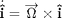
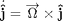
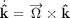
Omega に対するベクトル r の時間微係数を書き換えます。
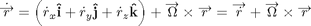
同様に、ベクトル r の 2 つ目の時間微係数を表現します。
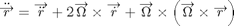
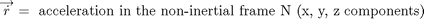

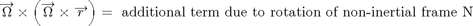
この方程式を簡単にするために、地球の Omega が非常に小さいと仮定します。そうすることで、上記の方程式の 3 番目の項を無視できます。実際、2 つ目の項 (1 つ目の項よりもすでにかなり小さい) は 3 つ目の項よりも 4 けた大きくなっています。これにより、方程式は以下のような形になります。
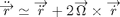
ニュートンの第 2 法則を書き換え、以下のように x、y、z 成分に分解できます。
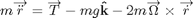
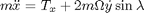
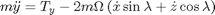
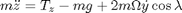
振動の角度振幅はわずかです。したがって、垂直速度と垂直加速度 (z ドットと z 二重ドット) は無視できます。ストリング張力の成分は小角度近似を使用して表現でき、問題が 2 次元へと大幅に単純化されます (以下を参照)。
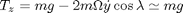
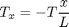
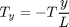

特性微分方程式
最後に、この問題の物理現象は以下に示す連立方程式系で説明できます。x 座標と y 座標は、地球上の観測者から見た振り子の振り玉の位置を指定しています。
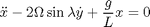
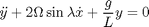
解析的な解 (近似)
以下は、フーコーの振り子の問題に対する解析的な解です。残念ながら、厳密なものではありません。解析的な解を微分方程式に代入しようとすると、階数 Omega の自乗の約されていない項が残ります。しかし、Omega は非常に小さいため、実用目的では、約されていない項を無視できます。
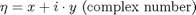
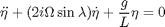
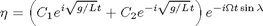
実際の微分方程式系は非対称
微分において、Omega の自乗に関する項は無視されました。これにより、微分方程式で xy 対称性が生じます。Omega の自乗に関する項を考慮した場合、微分方程式系は非対称になります (以下を参照)。
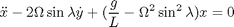
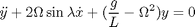
非対称の微分方程式が考慮されるように現在のフーコーの振り子モデルを変更することは簡単です。g/L を含んでいる該当の Gain ブロックを編集し、必要な式を追加するだけです。この変更による数値結果の全体的な訂正は、ごくわずかです。